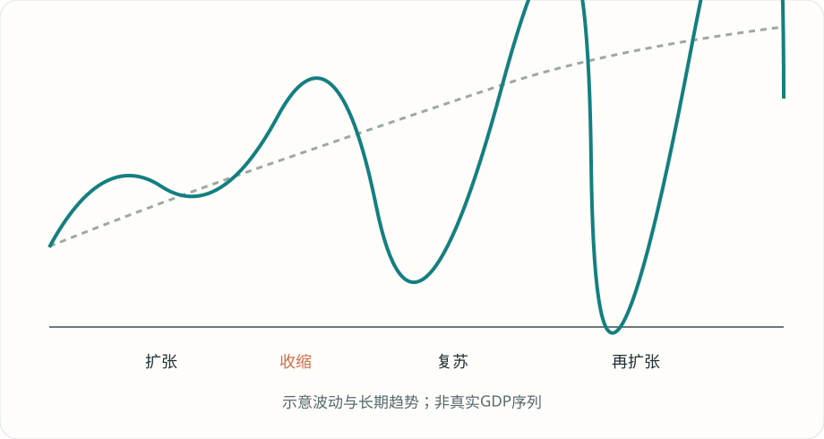
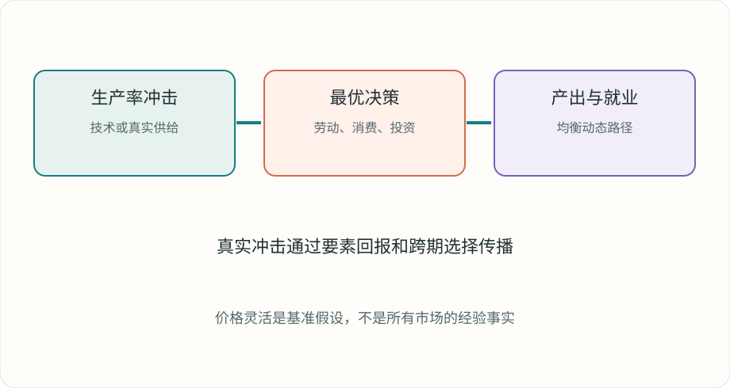
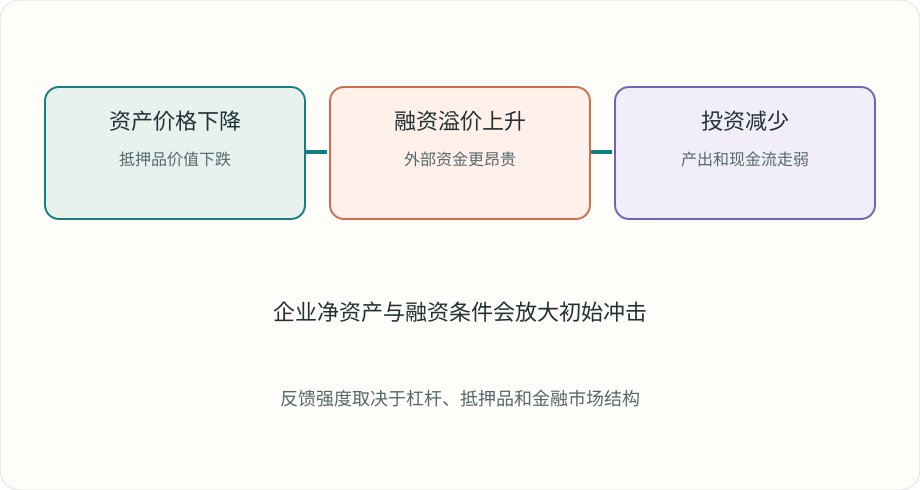

经济周期理论
为什么产出会围绕长期趋势反复波动？真实冲击、名义摩擦和信用脆弱性，如何解释同一场衰退的不同侧面？
经济周期是有规律的正弦波吗？
不是。经济周期指经济活动围绕长期增长趋势发生的扩张与收缩；峰值、谷底和持续时间并不等距，也不必重复相同波形。产出、就业、收入、消费、销售和工业生产等指标通常不会同步到达转折点。研究周期时，要先把长期趋势与短期波动分开，并说明采用的滤波或周期测量方法。
美国 NBER 的商业周期委员会将衰退定义为经济活动广泛、显著且持续数月以上的下降，并综合深度、扩散范围和持续时间判断。它并不把“连续两个季度实际 GDP 下降”作为唯一硬性规则。这个定义是美国周期定年的实践，不应不加说明地当成所有国家的官方统计制度。

RBC 理论为什么把真实冲击放在周期解释的中心？
真实经济周期（RBC）模型把家庭和企业的跨期最优化、市场均衡与真实冲击结合起来。技术或生产率冲击会改变边际产出、工资和资本回报，家庭可能调整劳动与休闲的跨期配置，企业则调整投资。Kydland 和 Prescott 的“建造时间”研究强调，资本项目需要多个时期才能完成，投资计划因此会把当前冲击传递到未来产能。
RBC 框架通常以价格灵活和市场出清作为基准，帮助研究真实冲击如何产生波动；但“所有衰退都只是有效的最优劳动供给变化”并不是可由模型自动推出的事实。技术冲击的识别、市场摩擦、金融约束和政策制度都可能改变解释。RBC 是一套有清楚假设的理论框架，不是对所有宏观波动的唯一答案。

新凯恩斯理论为何强调价格和工资黏性？
新凯恩斯模型同样使用跨期决策和一般均衡，但引入垄断竞争、价格调整摩擦、工资黏性或其他名义摩擦。企业不能每时每刻无成本地重设价格，需求变化因此可能先影响产量和就业，再逐步传导到价格。货币政策通过预期实际利率、融资条件和需求影响短期真实活动。
在最简新凯恩斯框架中，动态 IS、前瞻型菲利普斯曲线和央行利率规则共同决定产出缺口、通胀与政策利率。这里不把每个冲击的方向写成固定定律：技术、需求、成本加成和货币政策冲击的响应取决于冲击过程、参数和政策规则。经验估计需要与 VAR、调查预期及其他证据交叉比较。
信用摩擦如何放大原本不大的冲击？
企业净资产和抵押品价值下降时，外部融资溢价可能上升；贷款人担心借款人的偿付能力和代理问题，会提高融资成本或减少授信。企业于是削减投资和库存，经济活动走弱；收入和资产价格进一步下降，又会削弱净资产与抵押品。Bernanke、Gertler 和 Gilchrist 将这种内生信用条件放大冲击的机制称为金融加速器。

金融加速器与 Minsky 的金融不稳定假说有关联，但二者不是同一模型。前者有明确的借款人资产负债表和外部融资溢价机制；后者强调长期繁荣中融资结构可能由稳健的套期融资转向依赖再融资和资产价格上涨的脆弱结构。
“明斯基时刻”怎样从融资结构脆弱化中出现？
Minsky 用三类融资结构描述债务现金流风险：套期融资单位的经营现金流足以支付利息和本金；投机融资单位能支付利息，但本金到期需要滚动融资；Ponzi 融资单位连利息都无法仅靠当前现金流覆盖，偿付依赖资产升值或持续新增借款。融资结构从稳健转向脆弱，可能使小幅利率或资产价格变化触发集中去杠杆。
交互实验：同样大小的冲击，为什么传播路径不同？
选择一个简化冲击，改变冲击持久性与初始幅度，观察产出缺口和通胀的教学路径。系数为构造参数，用于区分需求与供给传导，不是估计过的 RBC 或新凯恩斯模型 IRF。
来源与进一步阅读
- NBER, Business Cycle Dating Procedure: Frequently Asked Questions
- Kydland & Prescott (1982), Time to Build and Aggregate Fluctuations
- Clarida, Galí & Gertler (1999), The Science of Monetary Policy
- Bernanke, Gertler & Gilchrist (1998), The Financial Accelerator in a Quantitative Business Cycle Framework
- Minsky (1992), The Financial Instability Hypothesis